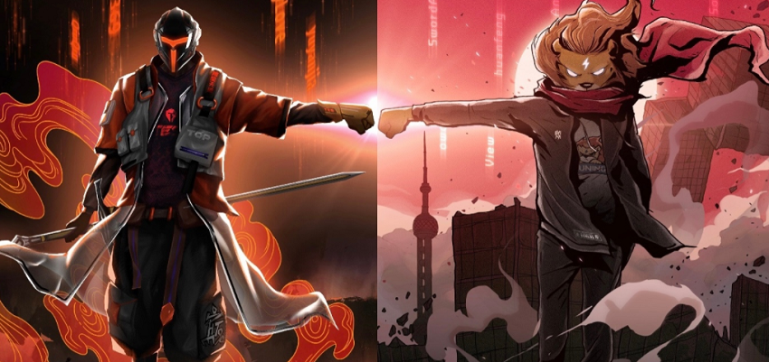
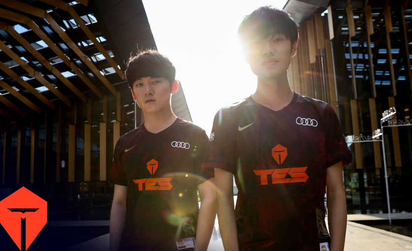
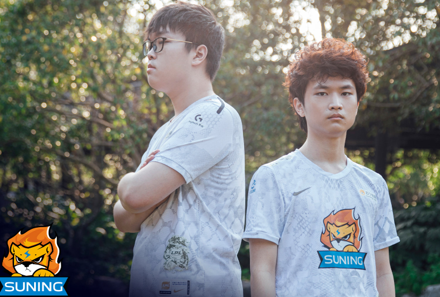

游戏大小姐
2020-10-25 09:01:50
理性谈一下TES和SN的出线形势，从以往表现来看，SN是LPL三号种子，TES是LPL一号种子，但从小组赛和淘汰赛来看，SN的状态火热，而TES状态不稳，到底哪一方会赢还真的说不准，有的人预测是TES，比如LCK的wolf和pawn都说TES有冠军相，但是从这个野核版本来讲，作为已经确定锁定半决赛的DWG来讲，他们更想遇到TES，而不想遇到有Sofm的SN。
有人分析为什么那么多人希望G2赢，有的人觉得G2这个队伍太有梗了，就算G2夺冠也没什么。而大部分人感觉宁愿让G2进入半决赛也不想让韩国队伍进入半决赛，说到底有些人认为LPL还是恐韩，S8、S9的决赛都没有韩国队伍，以至于有些人比如退役的we教练joker说S8、S9的冠军是最没有质量的冠军。嘴上说LCK是第三赛区，但是一打比赛就期望不要碰到LCK。
想着让G2打工，但是冠军哪里是让别人打工就能得到的，都是要靠自己打出来的。无论SN还是TES出线，决赛都要跟DWG打，这次希望能打出LPL赛区的自信，就算不敌DWG，也要打出我们赛区的特色。
